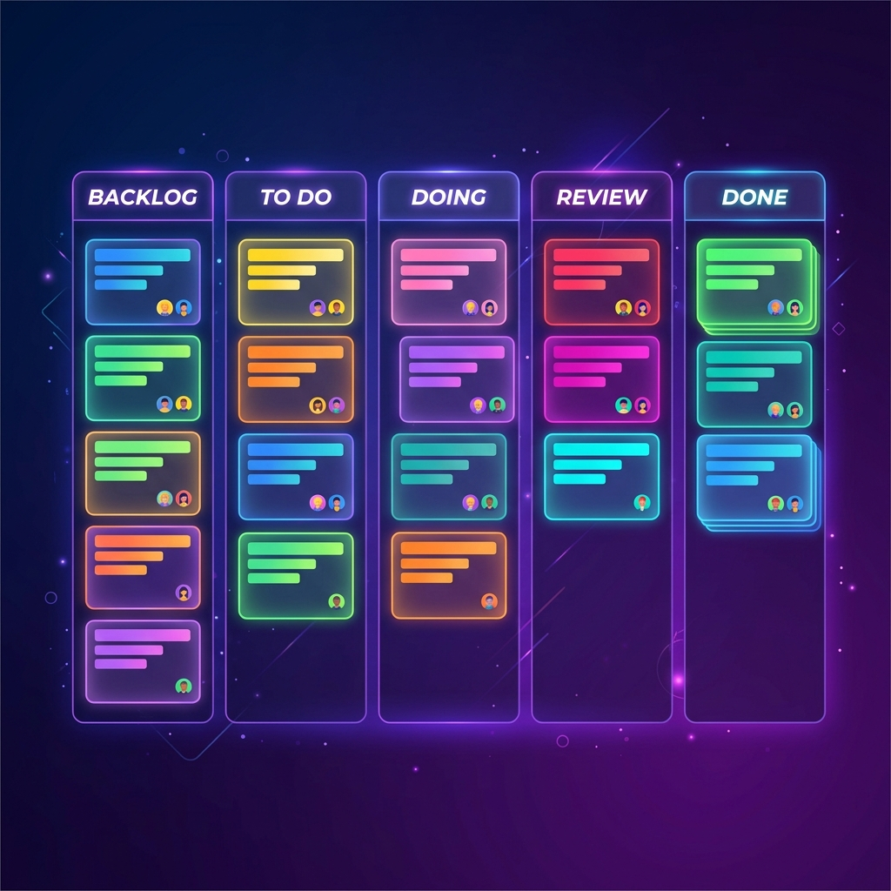
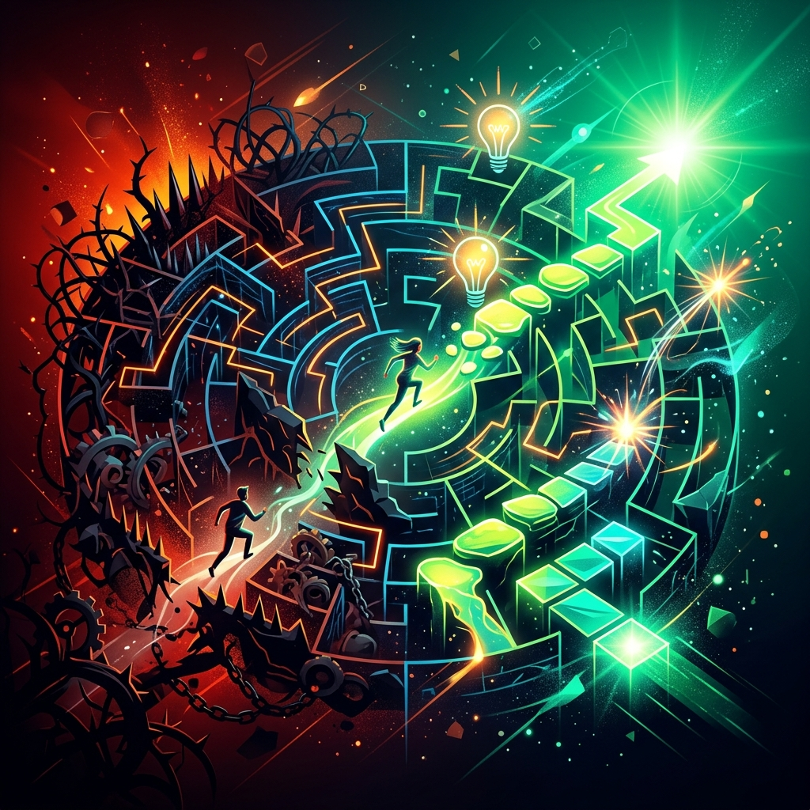
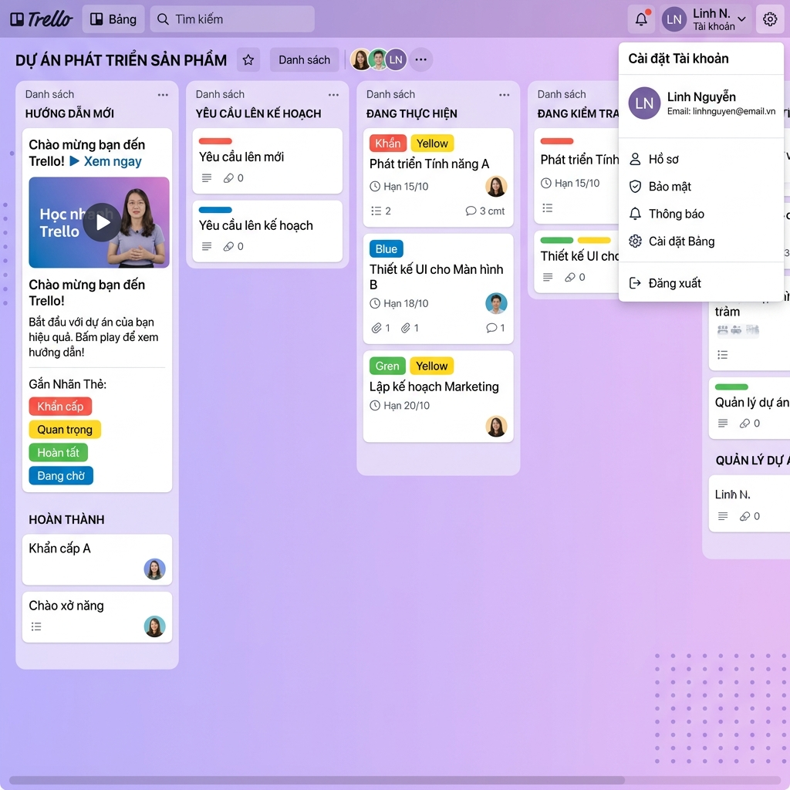
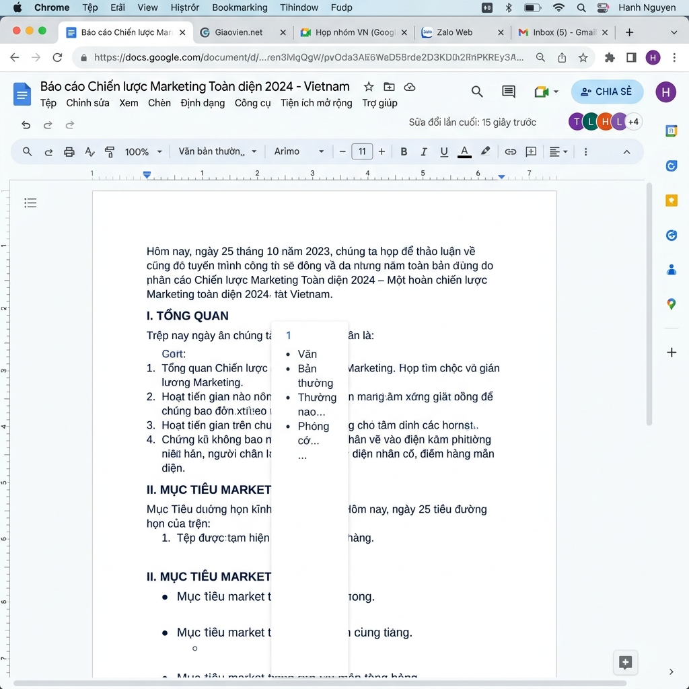
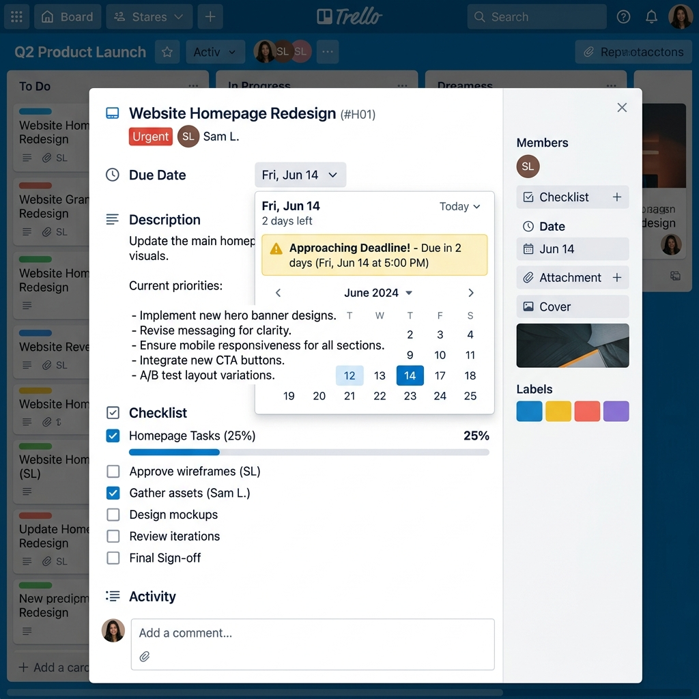
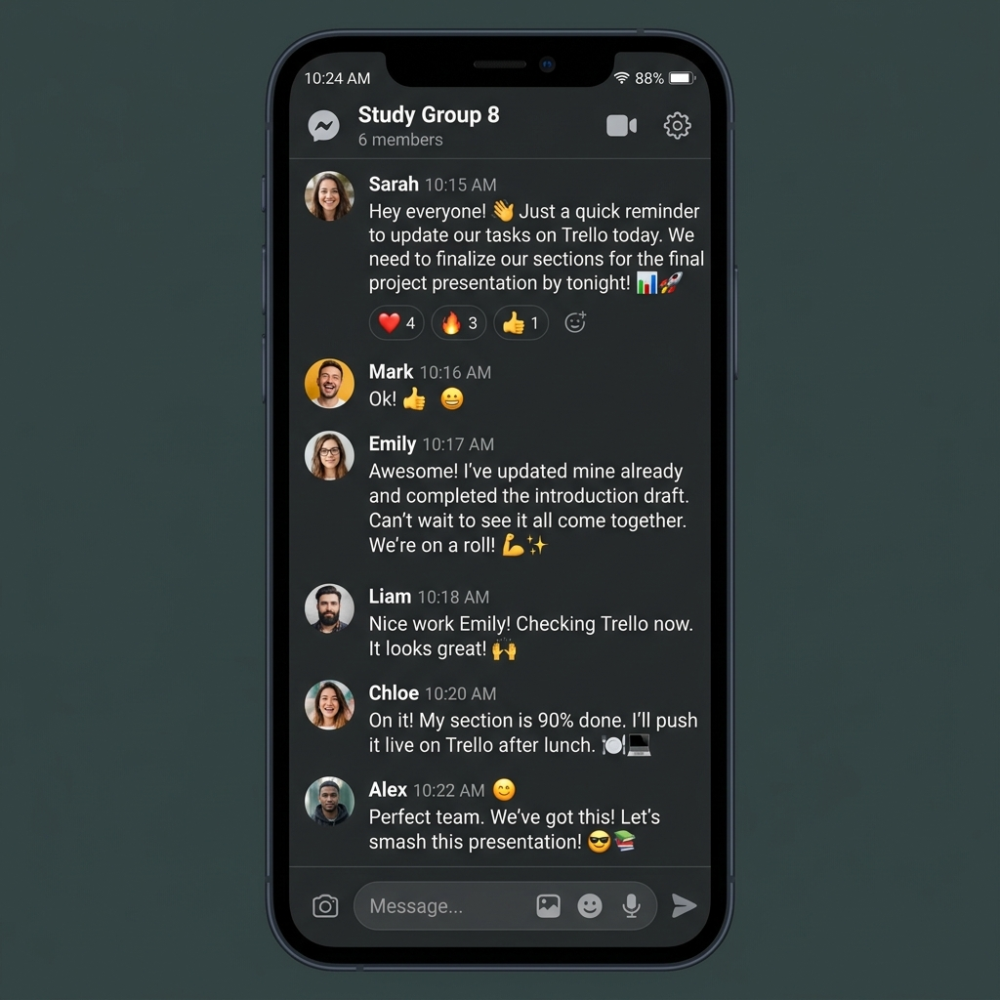
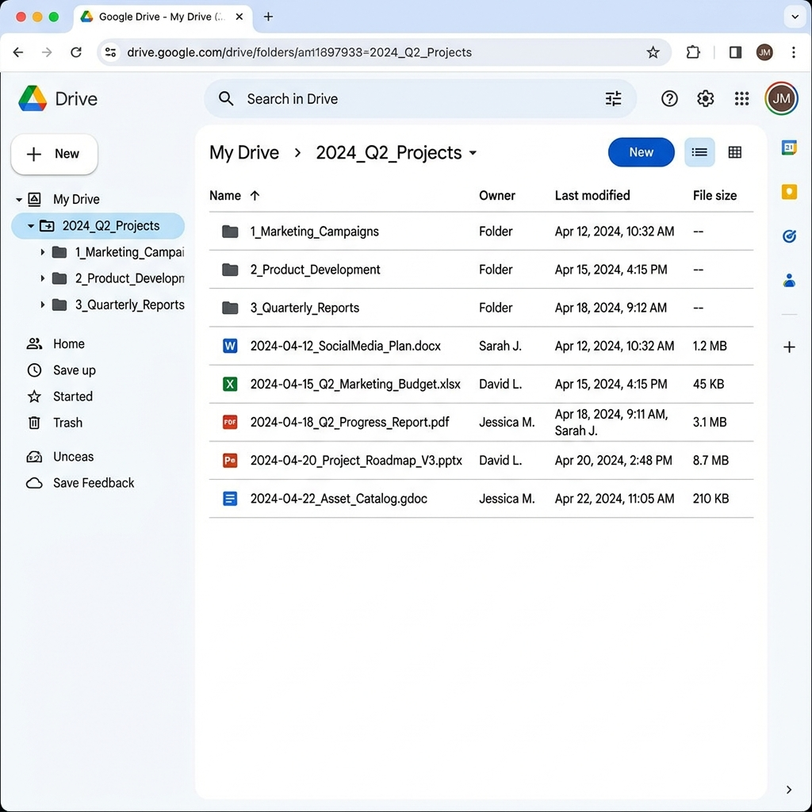

Quản lý hiệu quả dự án 8 thành viên với hệ sinh thái công cụ số: Trello, Google Docs, Drive & Messenger.
Xem Chi TiếtTổng quan về dự án nhóm và vai trò cá nhân trong quá trình thực hiện.
4 công cụ thuộc các nhóm chức năng khác nhau được sử dụng đồng bộ trong dự án.

Tạo Workspace chung với các cột trạng thái: Backlog → To Do → Doing → Review → Done. Gắn nhãn màu sắc theo mức độ ưu tiên và dùng Mention để giao việc đích danh.
Tạo file nội dung kịch bản thuyết trình, thiết lập định dạng chuẩn và đính kèm link trực tiếp vào thẻ nhiệm vụ tương ứng trên Trello để truy cập chỉ với một cú click.
Xây dựng hệ thống lưu trữ tài nguyên chung với cấu trúc thư mục 3 cấp logic và phân quyền truy cập an toàn cho cả nhóm.
Thiết lập nhóm chat công việc, ghim (pin) các thông báo quan trọng và link Trello/Drive lên đầu nhóm để không trôi tin nhắn.
Cách 4 công cụ kết nối và bổ trợ cho nhau trong quy trình làm việc nhóm.
Phân công & theo dõi
Soạn nội dung
Lưu trữ & quản lý
Trao đổi & nhắc nhở
Cách quản lý hiệu quả tác vụ và duy trì tương tác liên tục trong nhóm 8 người.
Hệ thống tổ chức tài liệu chuyên nghiệp đảm bảo kiểm soát 100% tệp tin.
[Ngày]_[TênNộiDung]_[TênNgườiLàm]
20260515_PhanTichPhepBienChung_MinhNT.docx
Cho phép cả nhóm cùng soạn thảo nội dung bản thảo.
Tránh vô tình xóa mất bản cuối cùng sát ngày thuyết trình.
3 thách thức lớn nhất khi quản lý dự án nhóm 8 người và cách giải quyết triệt để.

Rất dễ xảy ra tình trạng chồng chéo tác vụ hoặc phân chia không đồng đều — người làm quá nhiều, người làm quá ít.
Sử dụng tính năng Assign members vào từng thẻ việc nhỏ. Nhìn vào tổng quan bảng có thể dễ dàng theo dõi khối lượng công việc của từng cá nhân thông qua số lượng thẻ để điều phối lại ngay lập tức.
Kịch bản môn Triết rất dài, khi nhiều người cùng gõ trên một file dễ dẫn đến xóa nhầm ý của nhau hoặc làm hỏng định dạng chung.
Quy định mỗi người làm việc trên khu vực được đánh dấu tên sẵn. Khi muốn sửa bài người khác, bắt buộc bật chế độ "Suggesting mode" thay vì chỉnh sửa trực tiếp, sau đó cả nhóm thống nhất Accept/Reject.
Tần suất trao đổi lớn khiến file tài liệu hoặc thông báo quan trọng bị trôi đi mất, thành viên hay mất công lội lại tin nhắn.
Kết hợp tính năng "Ghim tin nhắn" (Pin) cho thông báo khẩn cấp. Quy định nghiêm ngặt: mọi tài liệu chính thức phải đẩy link lên Trello và Drive thay vì gửi file trực tiếp qua chat.
Ảnh chụp màn hình thực tế quá trình sử dụng các công cụ hợp tác trong dự án nhóm.

Giao diện tổng quan bảng quản lý dự án với các cột trạng thái và thẻ nhiệm vụ

Soạn thảo cộng tác với nhiều thành viên cùng chỉnh sửa thời gian thực

Mỗi thẻ việc có mô tả, checklist 25% hoàn thành, nhãn "Khẩn cấp" và deadline cụ thể

Nhắc nhở tiến độ, giao tiếp tích cực và ghim thông báo quan trọng

Tổ chức tệp tin theo quy chuẩn đặt tên, phân quyền Editor/Viewer rõ ràng
Quá trình chạy dự án cho thấy việc áp dụng đồng bộ hệ thống công cụ số không chỉ giúp bài thuyết trình được hoàn thiện đúng hạn mà còn giải quyết triệt để bài toán quản lý con người.
Công cụ số chỉ phát huy tác dụng tối đa khi đi kèm với một quy trình làm việc (workflow) rõ ràng và sự kỷ luật tuân thủ từ tất cả 8 thành viên trong nhóm.